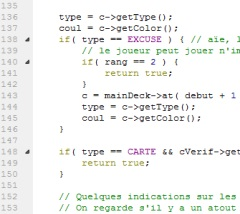
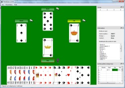

TarotClub- Le jeu de Tarot gratuit et libre
TarotClub est un jeu de Tarot libre (licence CeCILL) fonctionnant sur Mac OS X, Windows et Linux. Le but de ce site est de centraliser les informations autour du développement du jeu.
Wiki
La page de Wiki contient toutes les informations concernant la conception du jeu, l'architecture des scripts d'intelligence artificielle ainsi que le manuel complet du logiciel.

Développement
Vous pouvez participer au développement du jeu ! Le code source est librement disponible à tout un chacun. Le langage de développement principal est le C++, Java pour la version Android et un peu de JavaScript pour l'intelligence artificielle.
Téléchargements
La dernière version en téléchargement est la 2.2.0a1. Cette version est encore en développement et préfigure ce que sera la 2.2.0.
